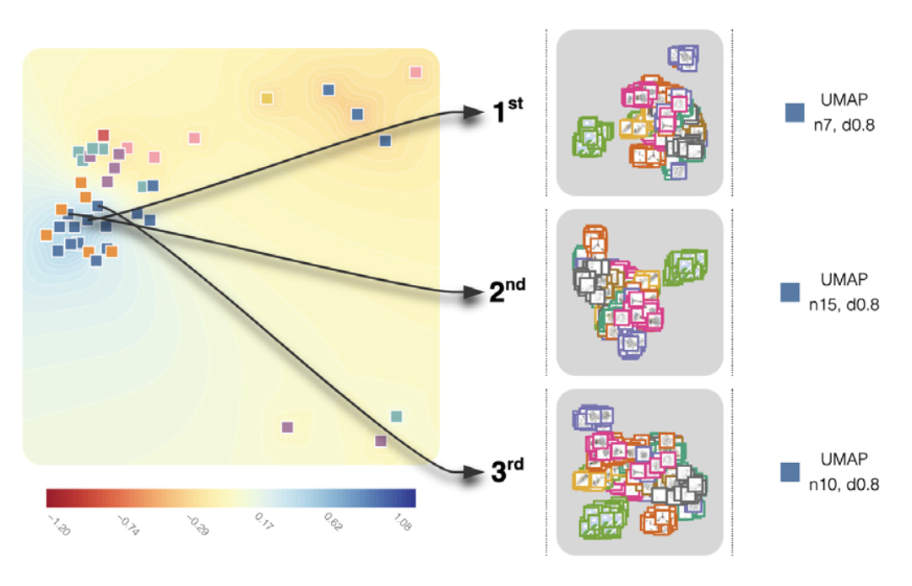

Predicting User Preferences of Dimensionality Reduction Embedding Quality

Venue. TVCG (2022) Full Paper
Authors. Cristina Morariu, Adrien Bibal, Rene Cutura, Benoit Frenay, Michael Sedlmair
Abstract. A plethora of dimensionality reduction techniques have emerged over the past decades, leaving researchers and analysts with a wide variety of choices for reducing their data, all the more so given some techniques come with additional hyper-parametrization (e.g., t-SNE, UMAP, etc.). Recent studies are showing that people often use dimensionality reduction as a black-box regardless of the specific properties the method itself preserves. Hence, evaluating and comparing 2D embeddings is usually qualitatively decided, by setting embeddings side-by-side and letting human judgment decide which embedding is the best. In this work, we propose a quantitative way of evaluating embeddings, that nonetheless places human perception at the center. We run a comparative study, where we ask people to select “good” and “misleading” views between scatterplots of low-dimensional embeddings of image datasets, simulating the way people usually select embeddings. We use the study data as labels for a set of quality metrics for a supervised machine learning model whose purpose is to discover and quantify what exactly people are looking for when deciding between embeddings. With the model as a proxy for human judgments, we use it to rank embeddings on new datasets, explain why they are relevant, and quantify the degree of subjectivity when people select preferred embeddings.
Acknowledgements. Funded by the Deutsche Forschungsgemeinschaft (DFG, German Research Foundation) – Project-ID 251654672 – TRR 161 (Project A08).